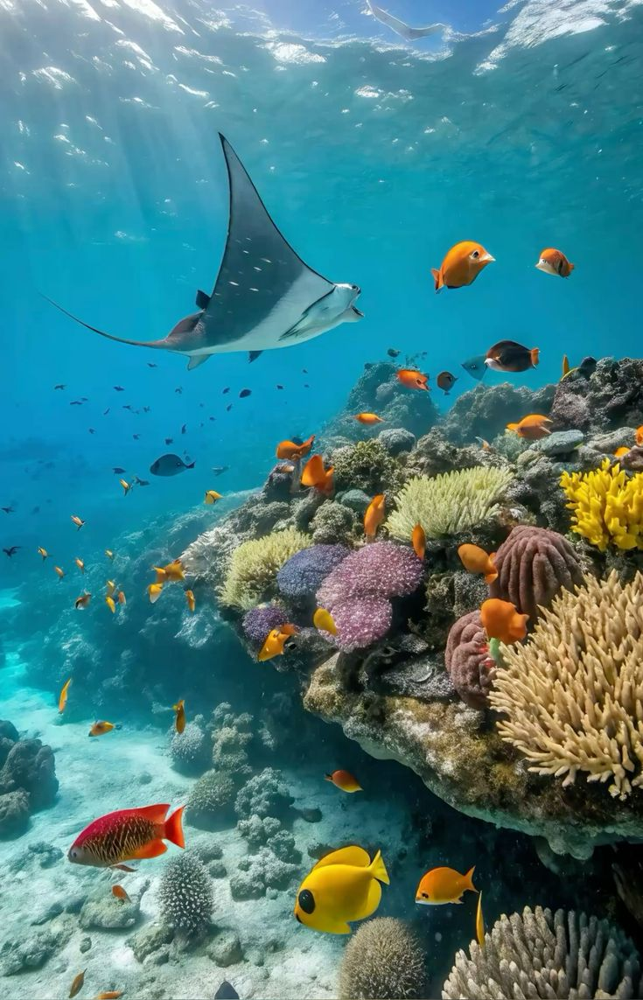

BÍ ẨN ĐẠI DƯƠNG

Đại dương bao phủ hơn 70% bề mặt Trái Đất và chứa đựng một hệ sinh thái vô cùng phong phú, từ những rạn san hô rực rỡ sắc màu cho đến các loài sinh vật biển kỳ diệu đang bơi lội trong làn nước trong xanh.
Khám phá và bảo vệ đại dương không chỉ giúp duy trì sự cân bằng sinh thái toàn cầu mà còn giữ gìn vẻ đẹp thiên nhiên hoang sơ cho các thế hệ mai sau. Ý thức bảo vệ môi trường biển chính là chìa khóa cốt lõi cho sự phát triển bền vững của nhân loại trên hành tinh xanh này.